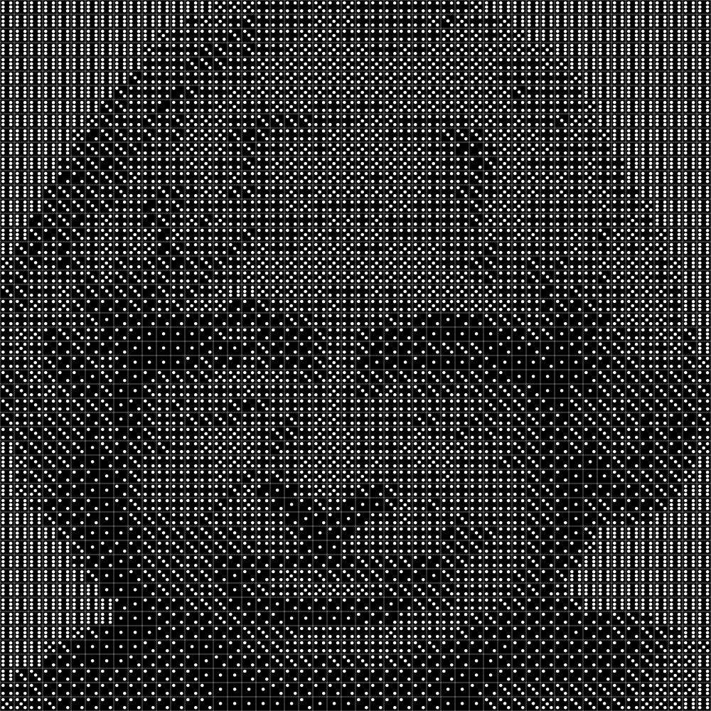
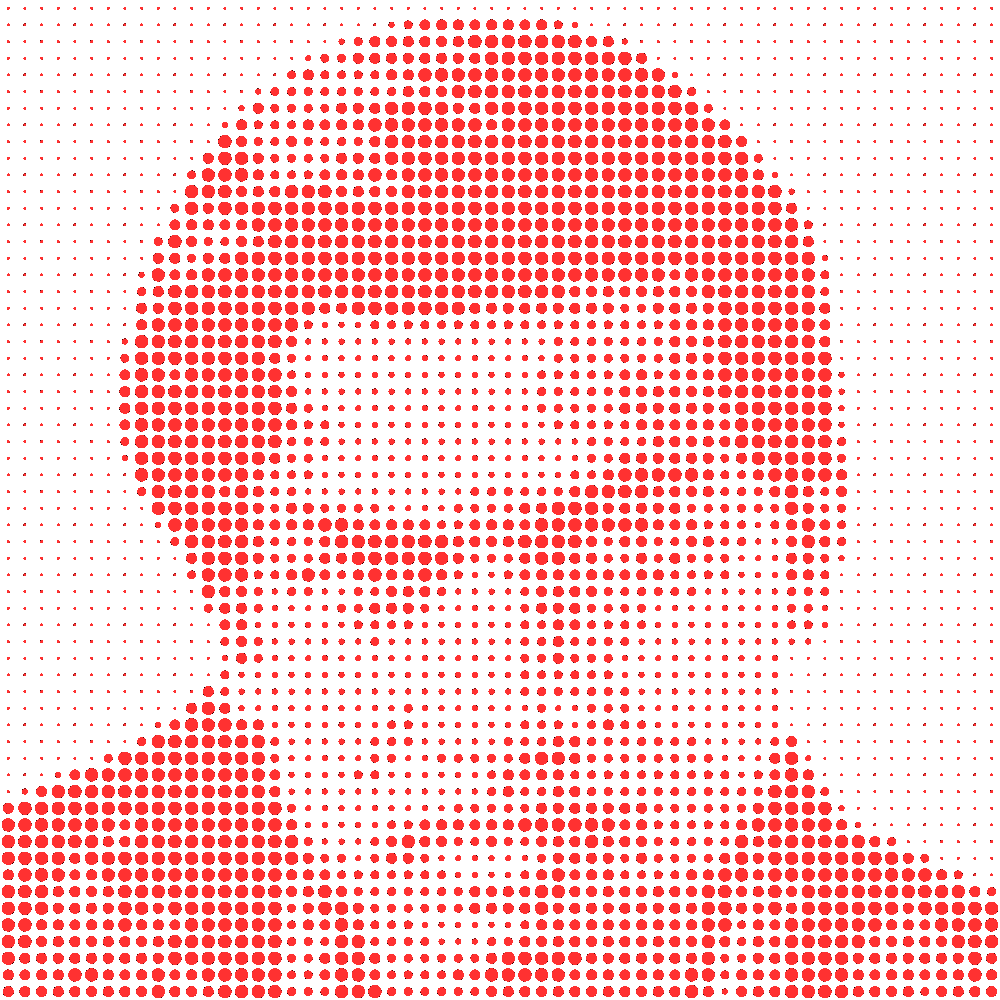
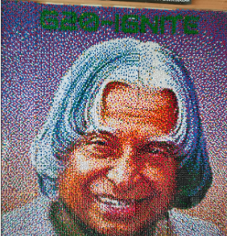
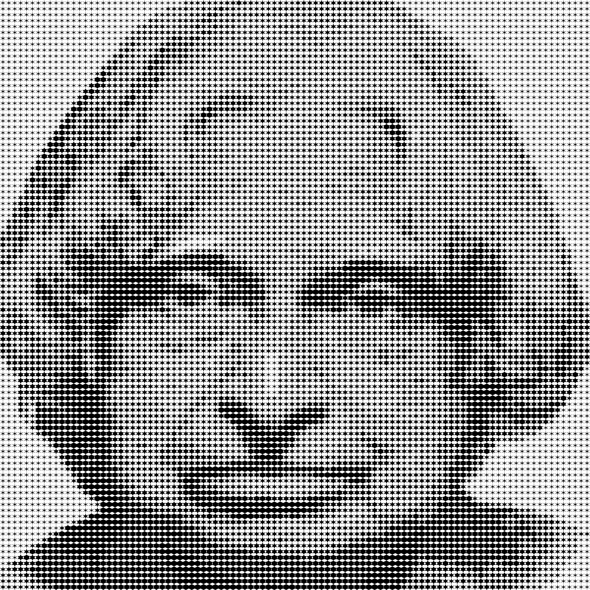

Dice Portrait
Create a portrait using dice face patterns based on grayscale values.
Create Now

Sticky Note Portrait
Create a colorful sticky note mosaic using pixel data.
Create Now

Bindi Portrait
Generate a portrait using vibrant bindi patterns.
Create Now

Pushpin Portrait
Create a unique pushpin portrait using grayscale pixel data.
Create Now

Origami Portrait
Design a portrait using artistic origami shapes.
Create Now

Kepler Portrait
Generate a portrait using the geometrical beauty of Kepler shapes.
Create Now